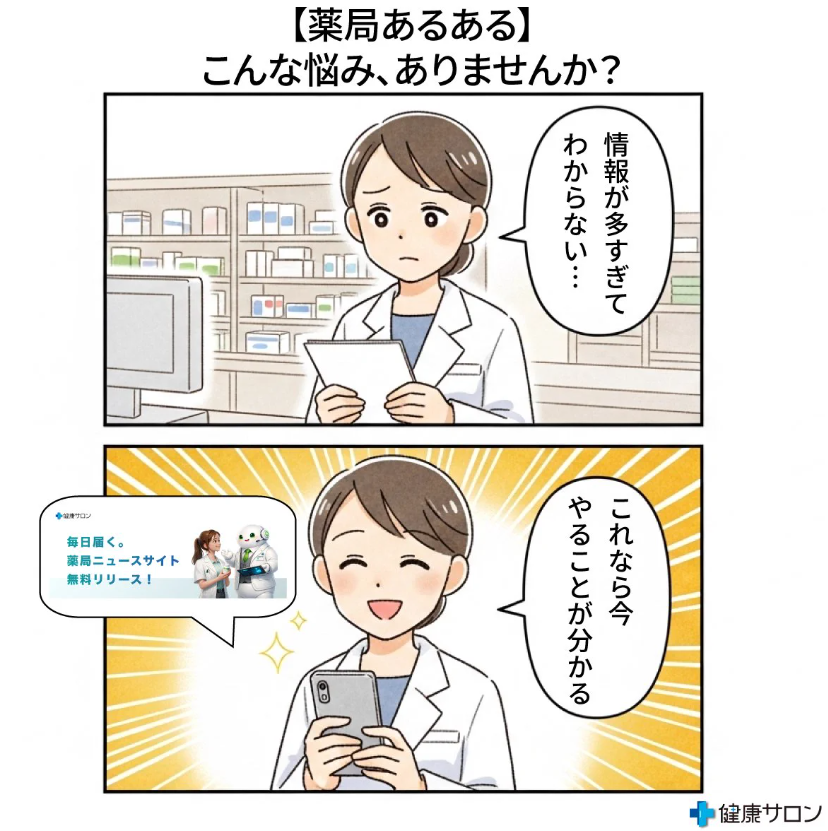

AI Works
AIを活用したコンテンツ制作
ChatGPT・Manusなど各種AIツールを使って制作した漫画・動画・記事コンテンツをまとめています。
01
長編AI動画
AI生成素材とPremiere Proを組み合わせて制作した、企業のホームページ用のストーリー動画です。
02
AI漫画

ChatGPTで台本・構成を生成し、AIイラストで仕上げた4コマ漫画です。
Xの投稿を見る →
03
AI動画
04
note記事
note
令和8年度診療報酬改定｜7月に薬局が見直したい届出後の運用ポイント
note
届出は出したけど本当に大丈夫？令和8年度改定後に薬局が確認すべきポイント
note
【800ページを10分で理解】令和8年度調剤報酬改定を"生成AIで読み解く"実践ガイド
note
点数より怖いもの。令和8年度改定が静かに変えている"評価の軸"とは